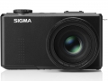

器材库 > 不可换镜头数码相机 > DP3 Merrill

规格总览
发布日期
2013-01-08
防水
否
影像规格
影像传感器
Foveon X3
影像传感器尺寸
23.5x15.7mm
总像素
4800万
有效像素
4600万
影像处理器
双TRUE II真像图像处理引擎
静态图像尺寸
RAW：4704x3136x3、3264x2176x3、2336x1568x3；JPEG:4704x3136、3264x2176、2336x1568
静态图像格式
JPEG, RAW, RAW+JPEG
画幅比
3:2
短片尺寸
640x480@30fps
短片格式
AVI
镜头和对焦
镜头结构
10片/8组
非球面镜片
1片
低/超低色散镜片
1片
焦距
50mm
等效35mm画幅焦距
75mm
最大光圈
f/2.8-f/16
自动对焦系统
相比检测系统
对焦模式
AF / MF
曝光控制
测光模式
中央重点测光, 多分区评价测光, 点测光
曝光模式
P（程序自动曝光）, A（光圈优先自动曝光）, S（快门速度优先自动曝光）, M（手动测光曝光）
快门速度
1/2000秒 - 30秒
曝光补偿
±2EV以1/3EV级调整
自动包围曝光
正常、过曝、欠曝，以1/3EV级增至±3EV曝光
ISO感光度
100, 200, 400, 800, 1600, 6400, 自动
白平衡
日光, 白炽灯, 闪光灯, 阴天, 阴影, 钨丝灯
自拍
10秒, 2秒
连拍
每秒1张
闪光灯
内置闪光灯
固定
闪光模式
自动, 慢速同步, 减轻/消除红眼
闪光涵盖范围
30cm - 3m （ISO 自动）
取景规格
LCD类型
TFT LCD
LCD尺寸
3.0英寸
LCD像素
92万
文件输入/输出
存储卡
SD/SDHC
数据接口
USB2.0
电源
电池
锂离子电池BP-41
外观
颜色
黑色
尺寸
121.5 x 66.7 x 80.6mm
重量
400g
gumpd2015-12-08 13:054.88 分
操作性 4.50功能性 4.50美观性 5.00趣味性 5.00耐用性 5.00性价比 5.00解像力 5.00色彩还原 5.00
jay7902015-04-08 13:594.69 分
操作性 5.00功能性 5.00美观性 4.50趣味性 4.00耐用性 5.00性价比 5.00解像力 5.00色彩还原 4.00
223sywj2015-03-18 02:534.63 分
操作性 5.00功能性 4.00美观性 4.50趣味性 4.00耐用性 4.50性价比 5.00解像力 5.00色彩还原 5.00
jay7902014-04-12 09:464.5 分
操作性 5.00功能性 5.00美观性 5.00趣味性 2.50耐用性 4.50性价比 4.00解像力 5.00色彩还原 5.00
stonestrong2014-01-12 15:334.5 分
操作性 4.50功能性 4.00美观性 5.00趣味性 5.00耐用性 4.00性价比 4.50解像力 5.00色彩还原 4.00
产品图 / 样片
评测 / 相关文章
- 详细内容 （存档）
- 依旧高画质 适马DP3M详细评测 （存档）
- ［试用］适马DPM系列配件改造及与D3X画质对比 （存档）
- ［资讯］适马 DP3 Merrill 真机图赏 （存档）
- ［资讯］适马DP3 Merrill官方样片欣赏 （存档）
- ［资讯］适马发布DP3 Merrill便携数码相机 （存档）